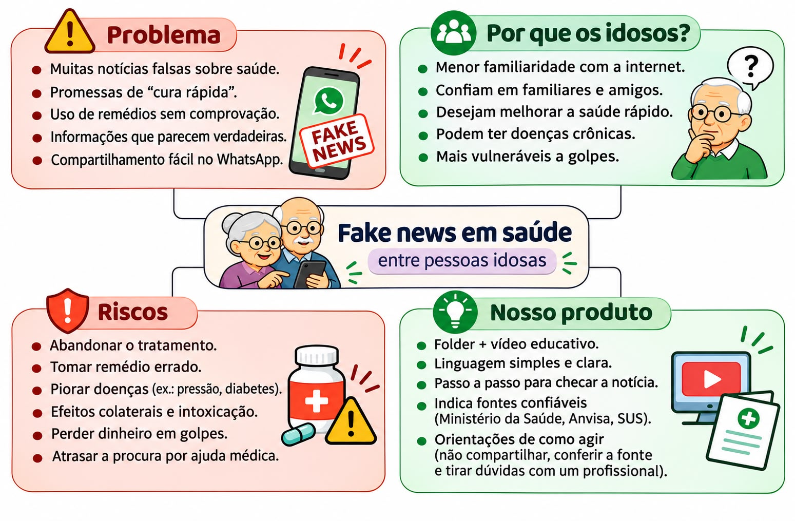
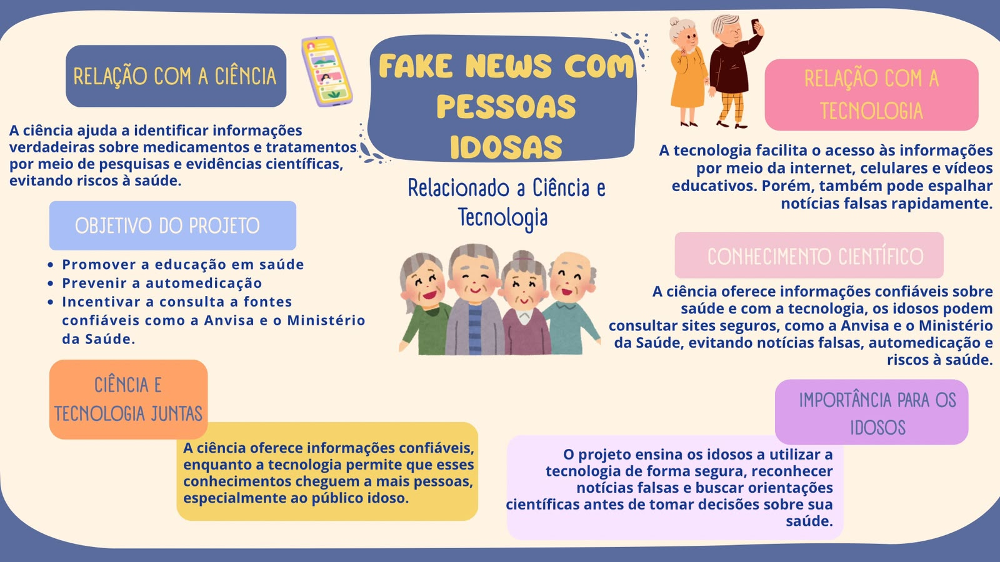
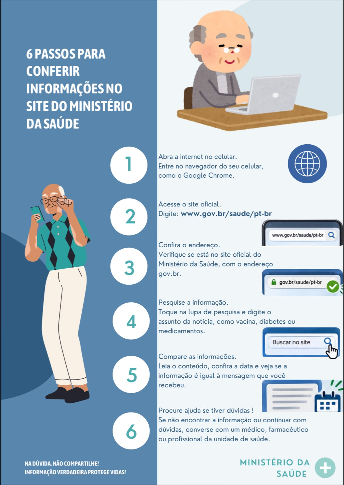

1
Problema abordado
As fake news em saúde podem levar pessoas idosas a erros graves, como automedicação, abandono de tratamento e atraso na busca por ajuda profissional.
Este site apresenta o projeto “Fake News em Saúde entre Pessoas Idosas”, reunindo o vídeo educativo, materiais visuais do trabalho e orientações simples para ajudar o público idoso a reconhecer notícias falsas, evitar riscos à saúde e buscar fontes confiáveis.



O site foi pensado para funcionar como apoio visual do TCC, com aparência profissional, navegação simples e elementos decorativos baseados nas imagens do próprio trabalho.
As fake news em saúde podem levar pessoas idosas a erros graves, como automedicação, abandono de tratamento e atraso na busca por ajuda profissional.
Promover educação em saúde, incentivar o uso de fontes confiáveis e mostrar, de forma simples, como verificar mensagens recebidas pela internet.
O conteúdo foi organizado com foco no público idoso, usando linguagem clara, contraste visual, botões grandes e recursos para aumentar o tamanho da letra.
O vídeo abaixo foi incorporado diretamente ao site para que ele funcione em um único arquivo HTML, sem depender de links externos para a reprodução principal.
Um dos pontos centrais do trabalho é mostrar que ciência e tecnologia podem caminhar juntas para proteger a saúde da população idosa. A ciência oferece informação confiável; a tecnologia, quando usada com segurança, ajuda a levar esse conhecimento às pessoas.
As imagens enviadas foram usadas para decorar e enriquecer a apresentação do conteúdo, deixando o site mais alinhado ao tema do seu TCC.
Material educativo que mostra um roteiro simples para idosos verificarem conteúdos antes de acreditar ou compartilhar.
Arte que resume o objetivo do projeto e reforça a importância de orientar pessoas idosas no uso seguro da informação em saúde.
Infográfico que resume os riscos das fake news e apresenta o produto educativo do trabalho: folder e vídeo com linguagem clara.
Resumo textual do material visual enviado, para facilitar a leitura diretamente no site.
Entre no navegador do celular, como o Google Chrome, para iniciar a consulta.
Procure por páginas do governo ou de instituições reconhecidas, como gov.br e Anvisa.
Verifique se o site realmente pertence a uma fonte oficial e segura.
Digite o tema da notícia ou do remédio para comparar a informação recebida.
Leia com atenção, veja a data e analise se o texto bate com a mensagem compartilhada.
Se continuar com dúvidas, converse com médico, farmacêutico ou profissional da saúde.
Além do vídeo e das imagens do trabalho, o site também incentiva a consulta a fontes oficiais e científicas.